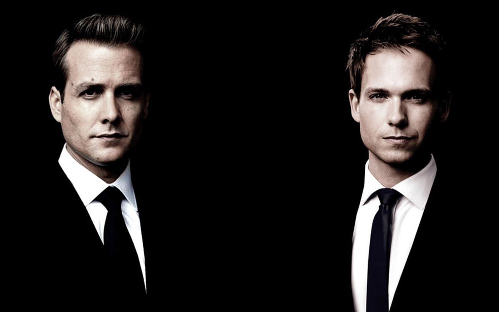
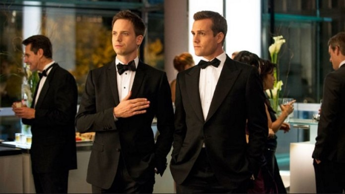
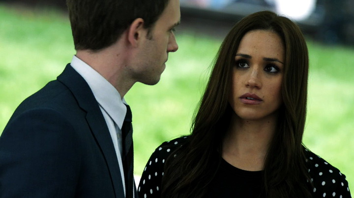
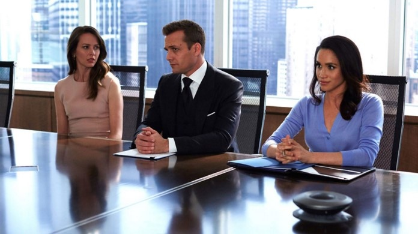
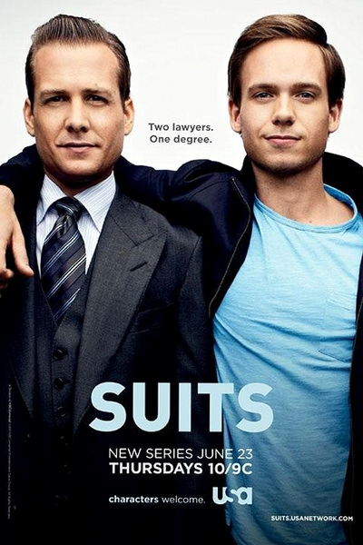

ЗаголовокСлоган | ||
Форс-мажорыОбладающий незаурядным умом и фотографической памятью Майк Росс так и не смог закончить колледж, зато в мечтах всегда видел себя юристом. Однажды, убегая от полицейской облавы после неудавшейся попытки сбыта наркотиков, он скрывается в отеле, где выдает себя за выпускника Гарварда и проходит собеседование у одного из лучших корпоративных юристов Харви Спектра. Харви зарабатывает 1000долл в час и ищет себе помощника. На фоне скучных соискателей Майк с его блистательными способностями и врожденным талантом показался ему достойным вариантом, хотя и рискованным. Так родился неординарный и успешный тандем юристов на Манхэттене.  Главные роли исполнили Гэбриел Махт и Патрик Джей Адамс. Премьера сериала состоялась 23 июня 2011 года на телеканале USA Network. Кадры из сериала   Трейлер |

Постер |
|
|
Список сериалов Шерлок Флэш Легенды завтрашнего дня Форс-мажоры Крик |
||